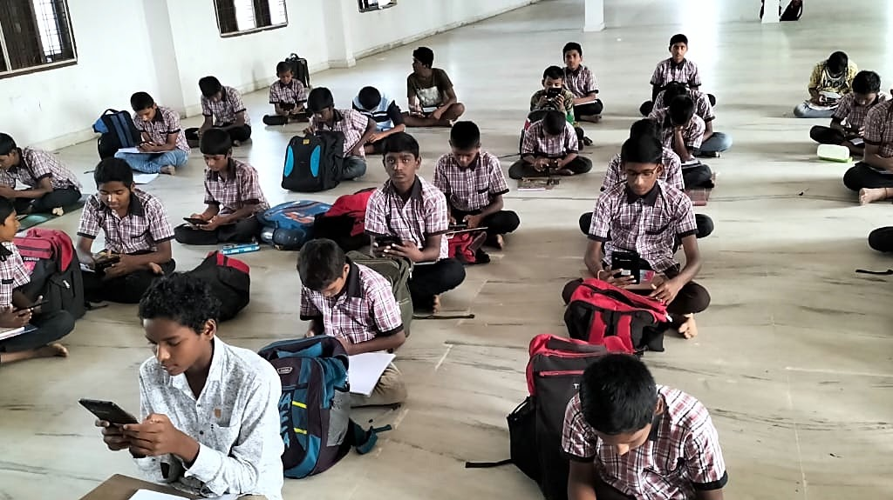
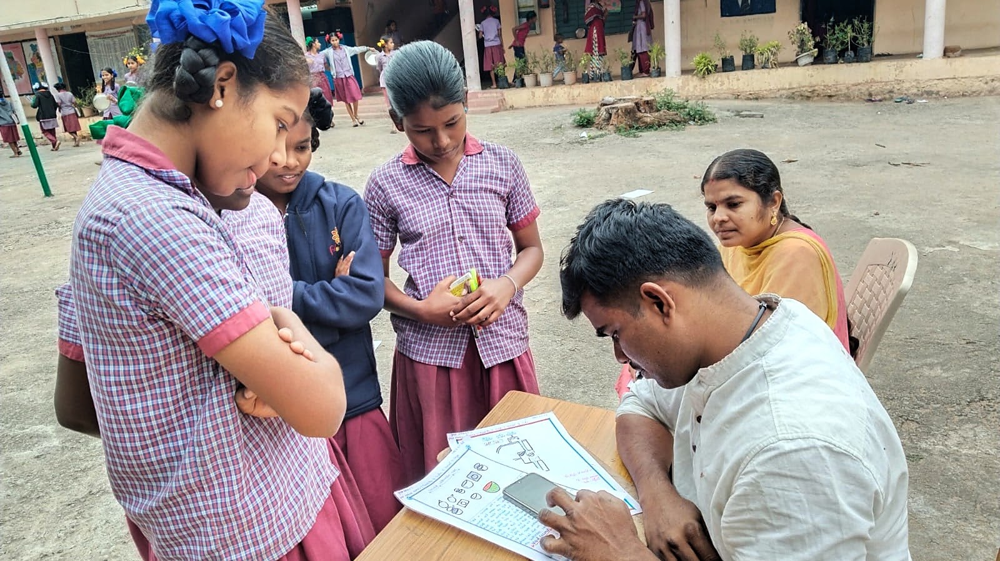

Research
Working Papers
Can Schools Teach Innovation? Experimental Evidence from India
Childhood exposure to innovation shapes who becomes an inventor, but most children grow up without it. This study uses a randomized evaluation across 80 public schools in India to show that schools can provide part of this exposure. A curriculum teaching the innovation process raised participation in an innovation competition, the quality of student ideas, and skills in exploration, idea generation, fluid intelligence, and problem solving. State graduation exam scores explain at most 10 percent of skill variation, suggesting that STEM track selection based on academic scores alone may overlook innovation-relevant talent. The program cost about $40 per student annually.
Scaling Up Personalized Adaptive Learning in India
In many developing countries, school curricula outpace children’s learning, and children in higher grades often learn very little. Targeting teaching to children’s actual levels raises learning, but nearly all such programs are NGO-delivered and require remediation several grades back, something unpalatable to schools and parents and thus hard to maintain at scale. Using multiple experiments and administrative data from an at-scale policy rollout in Andhra Pradesh, we show government can deliver large learning gains through targeted instruction with lighter remediation, and these results replicate. Administrative data from three contexts shows learning hinges on fidelity.
Measuring Foundational Learning by Phone: Evidence from a Randomized Crossover Experiment
Teachers and education officials report children’s learning outcomes, but they also have a stake in showing that their schools are performing well. Independent phone assessments offer governments a means of verifying these reports, provided they produce scores comparable to in-person testing. I test this using a randomized crossover experiment in Uttar Pradesh, India, in which Grade 2 and 3 children took the same tests by phone and in person at home, in randomized order, a median of five days apart. Among 428 children assessed on the same test form in both modes, the pooled comparison of literacy and numeracy scores yields a precisely estimated null. The findings support independent phone assessments for monitoring aggregate learning across administrative units, provided the assessments reach a representative sample of children.
Mother Tongue by Policy, English-Medium by Demand
India’s education policy calls for teaching young children in their mother tongue, while parents increasingly choose English-medium schools. Linking Census 2011 mother-tongue counts with school records from 2005-06 to 2025-26, this paper shows that even under generous matching within districts, schools could not have taught 45 percent of children in their mother tongue in 2025-26, up from 33 percent in 2005-06. Over the same period, English-medium enrollment rose from 5 to 29 percent, and the gap kept widening after the National Education Policy 2020.
Research in Progress
Planning Before Prompting: An Experiment on Students’ Use of Generative AI
Students increasingly complete analytic work with generative AI, but they still have to direct the tool and judge its output. In a timed data-analysis task at four engineering colleges in India, half of the students were randomly asked to plan their use of generative AI before starting. The study examines whether planning changes how students direct the tool, how they evaluate its output, the quality of their work, and how well they assess their own work.
Building Expertise in College Students in the Era of Generative AI
Generative AI tools are changing how students learn and the work they will do after graduating. This project studies whether a structured course can help engineering students build strong programming skills while learning to use these tools well. Third-year students at four engineering colleges in India are randomly assigned to the course or to a seminar series on other topics and are followed into early employment.
Career Education in Government High Schools
This project evaluates career education for adolescents in grades 9 to 12 in rural government schools in India. Randomized evaluations test career exposure and a socio-emotional skill-building and career-planning curriculum, with outcomes on schooling continuation, field of study, and career aspirations.
Going All In: Simultaneously Breaking Down Barriers for Women in the STEM Workforce
This project evaluates a two-year, women-only STEM training program for first-generation women engineering students in India, delivered nationwide by an education start-up. The randomized evaluation follows these women through college and into the labor market, measuring technical and higher-order skills and early career outcomes.
From the Field

